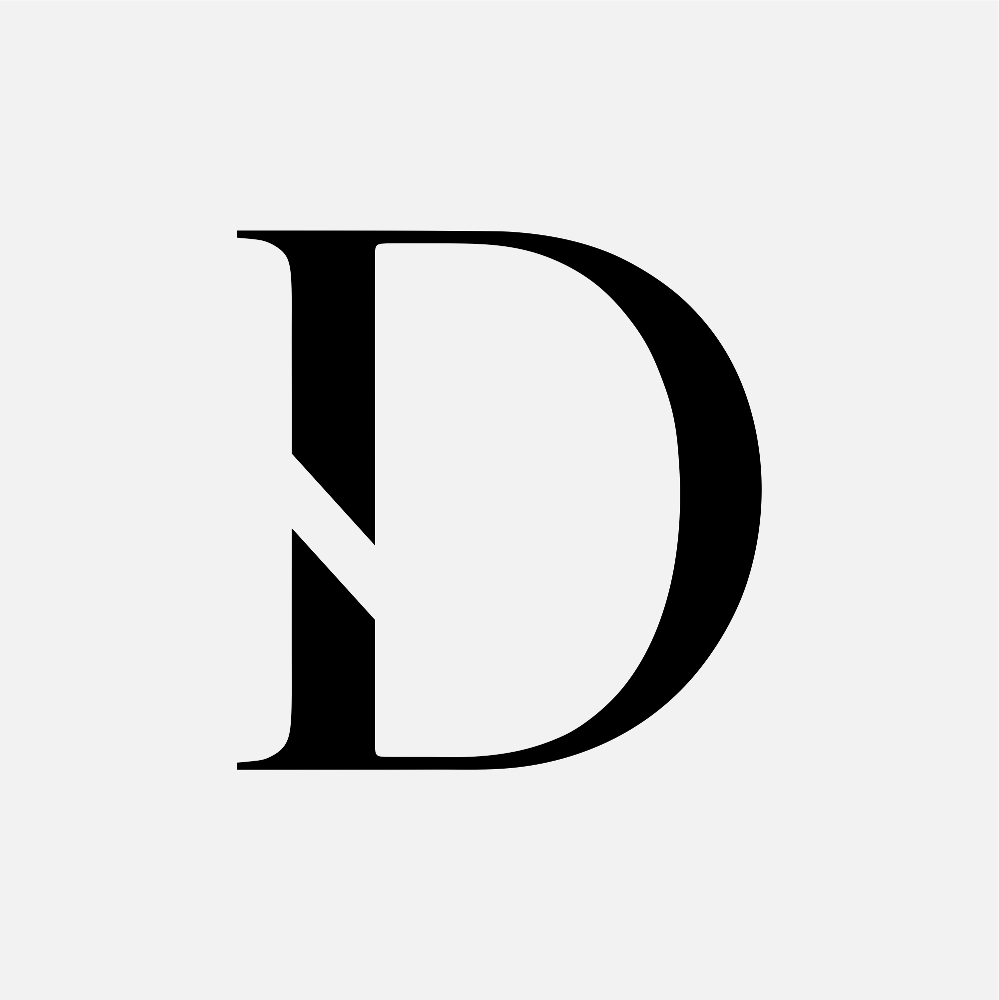
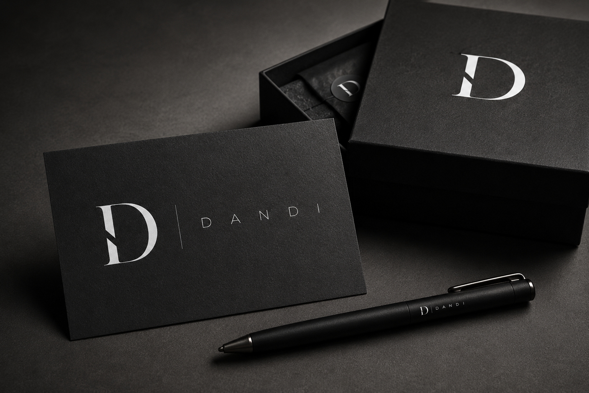
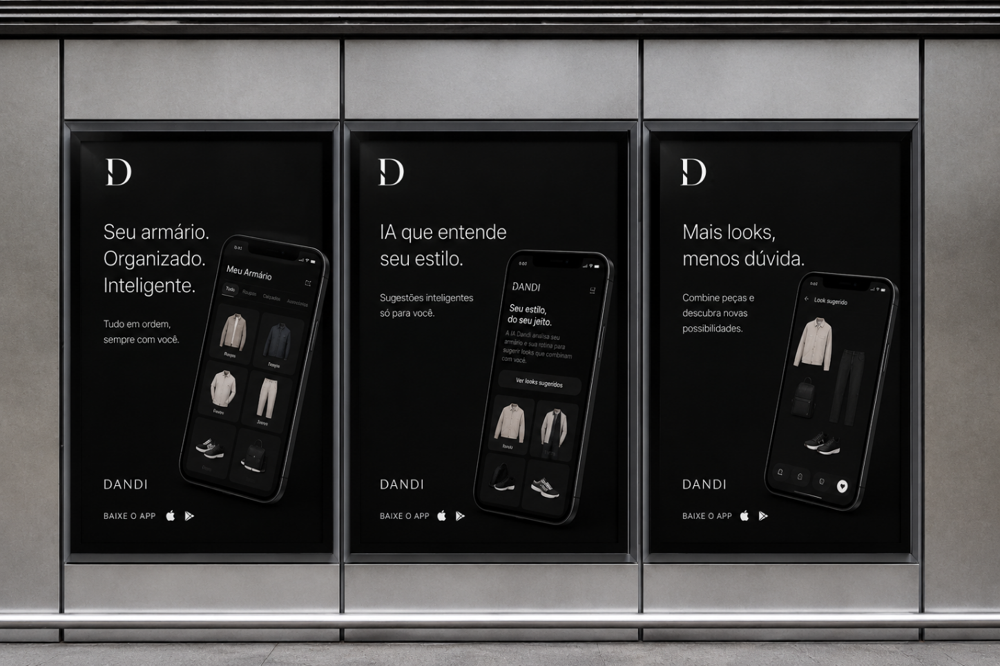
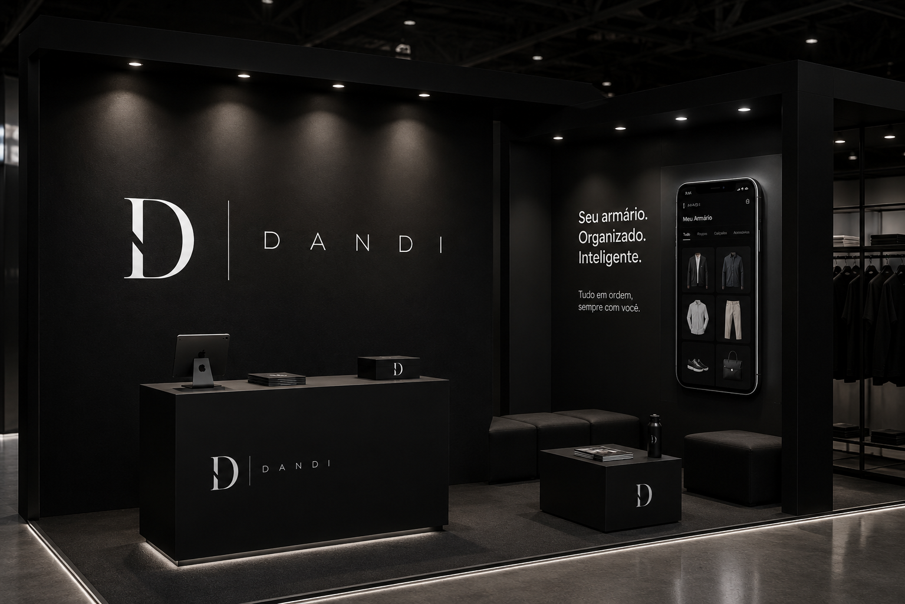

Termo histórico usado desde o século XIX para o homem que cultiva o estilo como expressão de inteligência e cuidado consigo mesmo. Não é vaidade. Intenção.
Espaço novo entre o hype barulhento do streetwear e a frieza utilitária dos apps técnicos.
Quer se vestir bem sem estudar moda. Trava na hora de combinar, valoriza tempo e foge do exagero. Estilo resolvido tem que parecer natural, nunca esforçado.
O slogan resume a marca em duas palavras: estilo que vem de método, não de sorte. Anda sempre ao lado do nome, nunca o substitui.
Vamos entender seu estilo.
Seu armário começa aqui.
Essa combinação funciona bem para ocasiões casuais.
Você pode elevar esse look com uma terceira peça.
A base do guarda-roupa precisa de 12 peças.
Look top demais!
Isso tá errado.
Bombou demais esse fit, mano!
Que peça PODEROSA, deusa!
Vibe maravilhosa, fashionista total.
Nossa escrita nas redes sociais (Instagram, e-mail e campanhas) segue a mesma calma do aplicativo. Somos silenciosos, precisos e editoriais.
A simplicidade é uma escolha consciente. Conheça o armário inteligente Dandi no link da bio.
Refinamento. Inteligência. Presença.
12 peças, infinitas composições. A precisão do caimento aplicada ao seu dia a dia.
O dândi moderno não se veste para impressionar, mas por intenção. Iniciamos a curadoria de estilo no app.
Galera, olha esse look deuso 🔥 Corre no app pra ver a vibe fashionista e arrasar no rolê de hoje! 😱👇
Você NÃO PODE perder essa novidade premium sensacional!!! O melhor estilo do Brasil está aqui!
#estilo #moda #lookdodia #dandistyle #top #modamasculina #estilomasculino #trends
Regra geral: Sem uso de gírias, emojis coloridos excessivos ou hashtags em massa. O tom é o de uma revista de lifestyle de luxo.
O D carrega dentro de si o N que está no centro de Dandi. A letra que liga começo e fim, escondida em plena vista.
Marca registrável. Única. Silenciosa. Como o próprio dândi.
Margem mínima: 50% da altura do símbolo. Mínimo digital: 24px · impressão: 10mm.
O símbolo é desenhado sobre uma malha de 12 × 12 unidades. Toda proporção deriva dessa grade, o que mantém o monograma reproduzível em qualquer tamanho sem perder o equilíbrio.
Cabeçalhos · cartões de visita · assinaturas de e-mail · documentos institucionais
Nenhum texto, imagem ou borda invade a área de proteção. É o que mantém a leitura limpa em qualquer fundo.
X = espaço interno do D. Na UI: ~16px. O respiro aumenta proporcionalmente ao redimensionar.
Abaixo disso, a marca perde definição. Para Retina/4K, use sempre .SVG.
Em peças acima de 1m, use sempre o arquivo vetorial.
A integridade da marca vale mais do que a criatividade do momento. Estes seis usos descaracterizam a Dandi.
A direção oficial é o 01, couro preto com o D em prata cromada. As demais versões cobrem fundo sólido, claro e escuro, para cada contexto de tela.

Para expandir o ecossistema do app ou sinalização sem descaracterizar a marca, todos os novos ícones devem seguir a mesma disciplina geométrica e linear da Dandi.
Os puros não entram na composição do dia a dia. Servem só quando a técnica exige: impressão, recorte de marca e máximo contraste.
Para interfaces digitais e estados de sistema. Tons profundos e dessaturados que respeitam o tema escuro da Dandi sem quebrar a identidade visual premium.
O cromado é o único acento da marca. Funciona porque é raro. Usado em tudo, perde o valor e a peça parece amadora. Aparece em no máximo um elemento por composição, sempre sobre fundo preto ou grafite, nunca como preenchimento de área grande.
Monograma e logotipo em acabamento metálico, sobre preto.
Um único traço ou linha divisória fina por tela.
Numeração de seção ou detalhe tipográfico pontual.
Relevo ou hot stamping no físico: hangtag, caixa, convite, brinde.
Borda fina de destaque em um card principal, nunca em todos.
Prata em texto corrido ou parágrafos inteiros.
Fundo inteiro em gradiente prata.
Mais de um elemento cromado disputando a mesma tela.
Prata sobre fundo claro ou mármore (perde o brilho, vira cinza sujo).
Botões e áreas tocáveis em prata (perde o contraste).
Prata junto de outra cor de acento (a marca não tem dourado nem verde).
A identidade física e tátil da Dandi se manifesta através de duas texturas contrastantes: o mármore frio e o couro orgânico.
Uso editorial estático. O mármore preto representa a solidez estrutural e a sofisticação da marca. Deve ser usado apenas como textura de fundo de capítulos, mockups de alta joalheria ou planos de fundo de apresentações.
Uso físico e tátil. O couro preto fosco traz a sensação de calor, robustez e vestuário clássico. É de uso exclusivo para o fundo do ícone oficial do aplicativo (springboard) e acabamentos físicos de papelaria (sacolas, caixas).
Regra de convivência: As duas texturas nunca devem competir no mesmo espaço visual de forma sobreposta. Escolha uma para predominar por tela ou peça física.
Telas, páginas web e materiais impressos da Dandi seguem o Grid System de 8px. Esta disciplina matemática confere consistência visual, eliminando decisões arbitrárias e estabelecendo proporções harmoniosas.
Múltiplos de 8px. Altura de botões, paddings de cards, margens internas, espaçamentos entre blocos e gutters devem ser múltiplos exatos de 8 (ex: 8px, 16px, 24px, 32px, 48px, 64px, 80px, 96px).
Margem Desktop. A margem lateral padrão para layouts desktop é de 8vw ou 96px. Isso garante que a área de conteúdo respire livremente em monitores de alta resolução, mantendo o apelo de grid editorial.
Margem Mobile. Margem lateral externa padrão de 24px nas bordas do dispositivo móvel. Os gutters (espaçamentos entre elementos internos de colunas) devem ser de 16px, para o aproveitamento ideal de tela.
Uma única família conduz todo o manual: Montserrat. Os pesos leves (200 e 300) dão o ar editorial; o itálico aparece só em citações.
Cada tamanho tem uma função. Nada é aleatório. A escala funciona igual no iPhone, no Android e no desktop — só os valores mudam.
font-variant-numeric: tabular-nums em preços, datas e contagens. Evita que os
dígitos "pulsem" ao atualizar.
Este manual rege a marca em tudo: produto, redes, campanha, evento e brinde. A mesma lógica de preto, respiro e prata cirúrgica vale em qualquer superfície.



Assinatura conjunta. Dandi e parceiro lado a lado, divisória fina entre as marcas, com respiro igual de cada lado, respeitando a área de proteção mínima de 1X (largura interna do monograma D).
O parceiro recebe o monograma ou a versão monocromática oficial. Nunca uma versão improvisada.
Nunca: recolorir, distorcer, aplicar prata em fundo cheio ou reposicionar elementos da marca.
As fotografias da Dandi são editoriais e aspiracionais. Elas comunicam elegância de forma silenciosa e evitam clichés comuns do mercado.
O aplicativo Dandi (iOS e Android) é o lugar onde a marca mais aparece. Aqui está como cada elemento deste manual se traduz em tela. A equipe de produto parte daqui, não de um documento à parte. Uma marca, uma fonte de verdade.
O app nasce escuro. Fundo profundo, conteúdo claro. É a identidade do manual levada ao produto, não uma decisão de tela à parte.
Contraste mínimo de 4,5:1 entre texto e fundo, em qualquer combinação. É a régua de acessibilidade (WCAG AA). Texto cinza só em tamanhos maiores, onde ainda passa.
Montserrat é a fonte do app, igual à do manual. Uma escala curta mantém a hierarquia limpa. Pesos leves, do jeito que a marca fala.
O pacote completo da marca acompanha este manual em um drive. Cada variação é entregue em dois formatos.